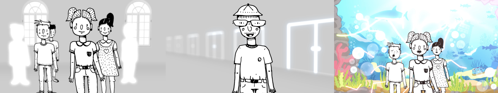
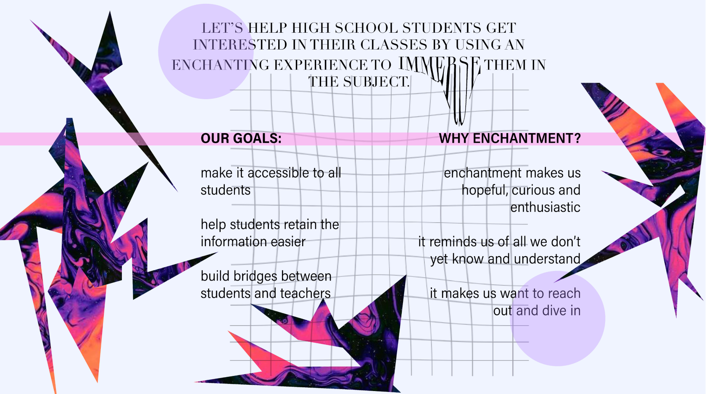
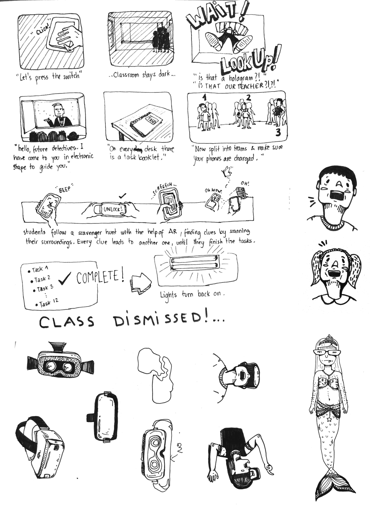
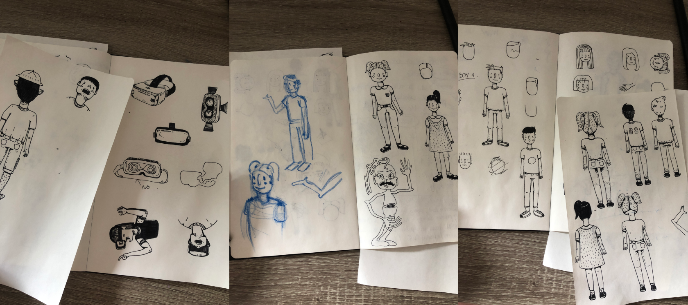
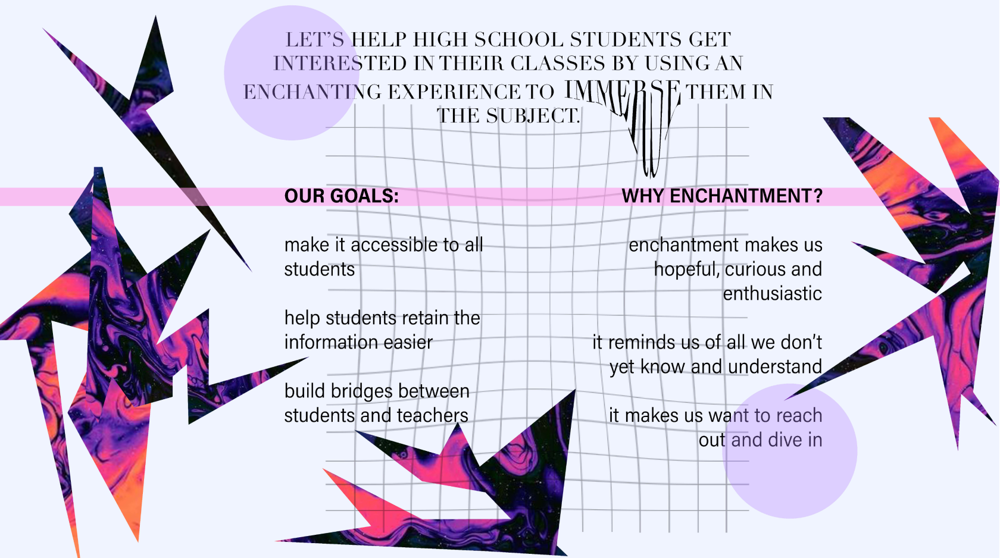
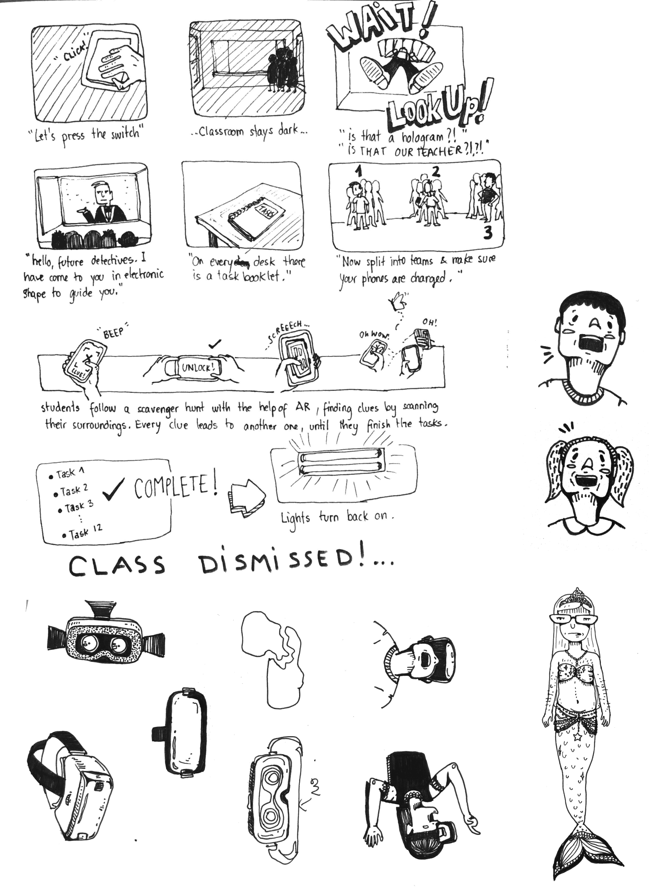
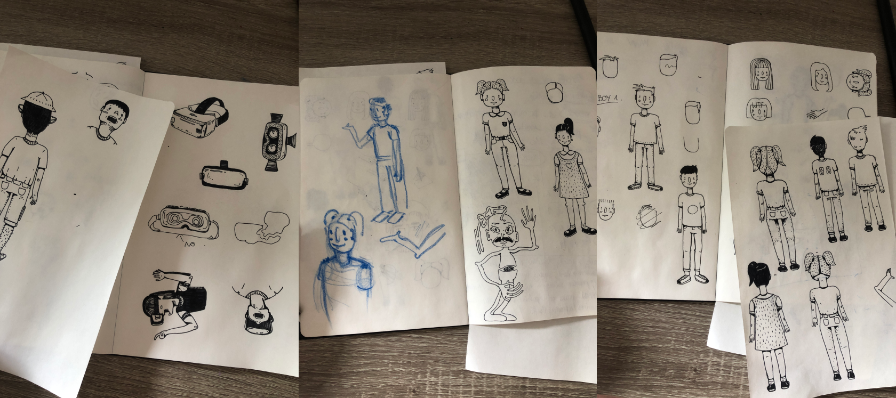

In march of 2020 my school started another team project that was very demanding and with a different goal in the
end, compared to the rest of the regular school projects. Our team comprised of four people and we had a very
clear task division, using Trello boards and making a cooperation agreement in the beginning of the project. We
also had very important feedback moments which helped us grow as a team and understand, individually, how our
contribution is valuable to the whole group.
The project started with us consensually picking an emotion that we would further explore and develop into a
useful tool for real life problems. My team and I picked enchantment and from that moment on it was a full
exploratory experience that gave us superb insights. Along the way, we realized that enchantment can be used to
evoke love, to stir away attention from a bad thing, or even to help somebody relax after a heavy day.
Further, we decided to focus on using enchantment as a learning tool, taking action in developing a hypothetical
situation in which pre-teen students are having a hard time concentrating in class. We thought of using either
VR or AR in designing an interactive experience that stimulates the students into participating actively, while
assuring retainability.
In the end, we decided to go for an experience that combined the best parts of all four of our concepts, and
came up with the following final concept: a VR Museum of Curiosity where students can open a new door every week
and, guided by their teacher, discover interactive adventures based on the subject of each lesson.
Our deliverable product would be a video prototype of the experience, and we settled on making an animation.
For the deliverable I primarily took care of drawing/designing the characters:
(Unfortunately, the animation video has been set to confidential for the moment by the owner.)
 




